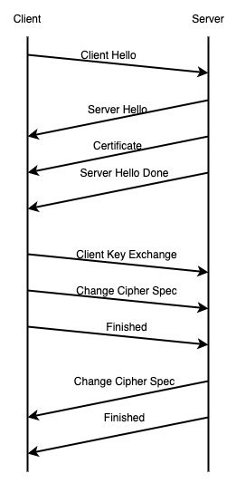

HTTPS 原理
文章目录
为什么要有 HTTPS
做开发的都知道 HTTP 使用明文进行传输内容，就是在裸奔，一点安全感都没有。
在传输的过程中任何一个节点都可以对内容进行监听，篡改，冒充。
为了解决 HTTP 存在的这些问题就出现了 HTTPS 。
加密
我们都知道 HTTP 协议是明文传输的，存在被窃听，篡改，伪装的风险。
想要解决窃听的问题就可以通过把要传输的内容进行加密，这样别人即使窃听到了内容，也看不懂内容是什么。
HTTPS 的加密使用了对称加密和非对称加密组合的方式来保证内容的安全。
对称加密
对称加密的意思是加密和解密都用同样的密钥。使用这种方式加密的话需要把秘钥发送给对方，这样对方才能解密。但是密码在传输的过程中，也会碰到类似被窃听的风险，这样加密也就没有意义了。
对称加密的优点是：算法简单，性能好。
对称加密的缺点是：安全性不高，容易被破解。
常用的对称加密算法有：AES、DES
非对称加密
非对称加密是相对于对称加密而言的，在非对称加密中用于加密和解密使用的是不同的密钥，他们被称为公钥和私钥。
其中公钥是对外公开的，谁都可以获得。私钥是自己持有的，不能让别人知道，要绝对的保密。
公钥加密的内容只有私钥才能解密，同样私钥加密的内容只有公钥可以解密。但是我们通常不会用私钥加密，因为私钥加密之后，公钥进行解密，而公钥是公开的，谁都可以获得，所以加密等于没加。通常大家也都是通过公钥加密私钥解密。
私钥还有一个作用就是用于认证和签名，因为私钥是只有自己持有，所以可以认为用私钥进行签名，就代表的是你本人。
非对称加密的优点是：加密安全性高，不容易被破解
非对称加密的缺点是：加密时间长，性能不高。
常用的非对称加密算法有：RSA、DSA
混合加密
在 HTTPS 中使用的加密是混合了对称加密和非对称加密。为什么要这样设计呢？
对称加密容易被破解安全性不高但是加密速度快，而非对称加密安全性高，加密速度慢。把这两者结合就可以保证安全性和性能。
混合加密在 HTTPS 中的使用场景是在交换密钥阶段使用非对称加密，而传输的内容使用对称加密。因为秘钥交换阶段需要传输的内容较少，所以用非对称加密是可以接受的。
签名
加密可以解决传输内容被窃听的风险，但是不能解决内容被篡改的风险。所以为了防止内容被篡改需要对内容进行签名，从而确保内容的正确性。
签名需要使用私钥，私钥只有自己有，别人没法伪造。
在服务端给客户端发送消息的时候，会把内容进行 Hash 处理生成摘要，并用私钥进行加密生成签名，发给客户端。
客户端使用公钥进行解密得到内容，再对内容进行 Hash 处理生成摘要，如果两次摘要相同，就可以表示内容没有被修改过。因为只要内容被改过了，生成的 Hash 摘要也是千差万别。
证书
通过加密的手段可以保证内容不被窃听，经过签名之后可以保证内容的完整性，但是公钥在传输的过程中还是有可能被人拦截给冒充了，冒充的人把自己公钥发给了客户端，让客户端以为收到的是服务器的公钥。所以冒充者可以解密客户端发送到服务端的数据，又能用服务端的公钥加密数据，往服务端发送数据。
有了这个风险之后就需要一种机制可以验证客户端收到的公钥确实是服务端自己的，而不是别人的。这种机制就是证书认证。
证书认证就是服务端把自己的公钥交给认证机构，认证机构在确认申请人的身份后会对这个公钥的一些相关信息进行签名并生成进一个证书发给服务器。
服务器在和客户端通信的时候会把证书也发给客户端，客户端收到这个证书就会对这个证书进行验证，通常在浏览器中会内置一些认证机构的公钥，用于确定客户端收到的这个证书是否是我认证的过的。如果是认证过的说明服务器的公钥没有被篡改，可以进行通信。
既然服务器的公钥都可以造假，那么认证机构是不是也可以造假？
谁都可以开发一个浏览器，那么这些自己开发的浏览器就可以对认证机构的证书进行伪造，这样也就没有办法保证认证机构的正确性了。
为了解决认证机构伪造的问题，需要使用根证书来验证，而根证书是操作系统内置的，通常我们认为根证书是可信的。
证书的作用就是用来验证公钥的身份，保证没有被人冒充。
HTTPS 通信机制
HTTPS 中的 TLS 有以下几个阶段

Client Hello
客户端向服务端发送 Client Hello 报文给服务端，其中包含了 TLS 的版本，客户端支持的加密算法列表和加密算法的长度，还有一个随机数。
Server Hello
服务端发送一个 Server Hello 的报文给客户端，其中包含了服务端从客户端支持的加密算法中筛选出的加密算法和随机数
Certificate
服务端把公钥和证书发给客户端
Server Hello Done
服务端发送 Server Hello Done 报文给客户端，告诉客户端最初的阶段完成了。
Client Key Exchange
客户端使用证书验证公钥的正确性，验证通过后，会生成一个 pre-master key 的随机数，用服务端给的公钥进行加密后发送给服务端。
Change Cipher Spec
客户端告诉服务器，加密算法改变，后面的消息都会使用密钥加密。
Finished
客户端告诉服务器，我这里完成了，并把握手开始的所有消息的 Hash 和 MAC(Message Authentication Code) 发给服务器，让服务器在验证一遍。
Change Cipher Spec
服务端收到客户端发送的 pre-master key 之后，用私钥解密。然后通过密钥协商算法计算出加密的密钥。服务器发送 Chnage Cipher Spec 报文给客户端，告诉客户端加密算法改变，之后的消息会用密钥进行加密。
Finished
服务器告诉客户端，我这里完成了，也会把所有的消息的 Hash 和 MAC 发给客户端，让其验证。
抓包工具为什么能够抓取 HTTPS 的内容
既然 HTTPS 这么安全为什么能够通过抓包工具得到内容，比如使用 Fiddler 和 Charles 。
在使用 Fiddler 或者 Charles 的时候，通常这些工具会让你先在手机上安装一个根证书，安装完这个根证书之后，它就能够验证抓包工具的证书，所以让客户端认为它确实是服务器的公钥。
总结
HTTPS 通过加密来确保内容不被窃听，通过签名保证内容不被篡改，通过数字证书来保证不会被人冒充。